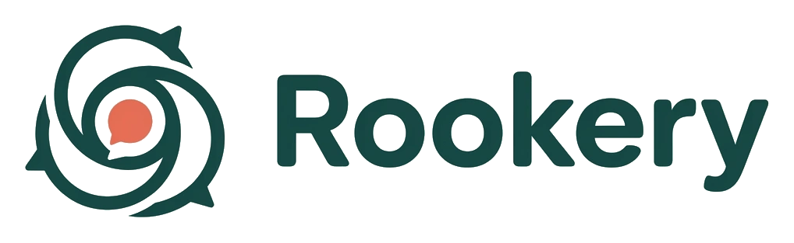

# huddle-rotation
Requests to stand somewhere slightly better.
Today, November 10
Pinned colony policyTwo distinct approvals. One inward rotation. Standing closer before approval is an undocumented movement.
No squawks match these filters.

Colony workspace / East Ice Shelf← back to the pitchRequests to stand somewhere slightly better.
Today, November 10
No squawks match these filters.